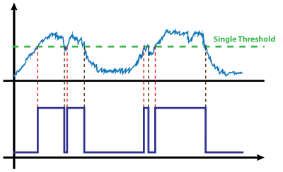
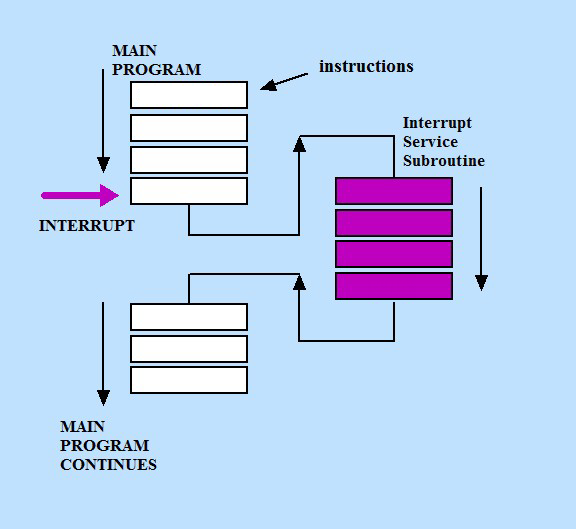
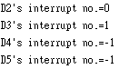
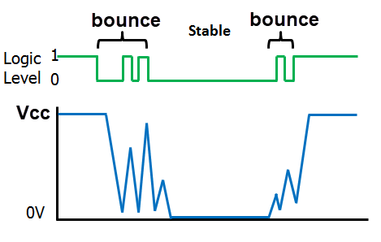
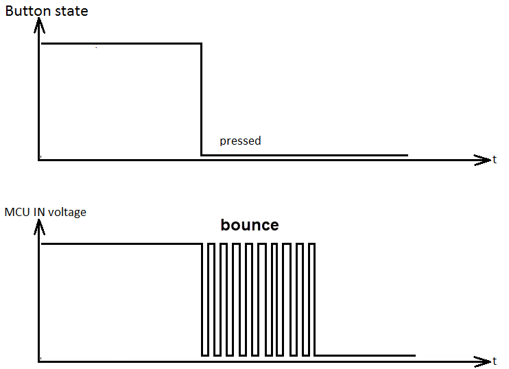
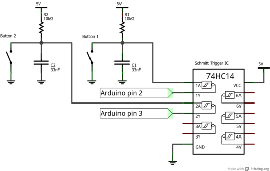

Schmitt trigger

 |
| Serial Event |
| //使用Serial Monitor 控制LED(D6) 0,1 #define led 6 volatile int inB; void serialEvent() { inB = Serial.read(); } void setup() { Serial.begin(115200); pinMode(led,OUTPUT) ; digitalWrite(led,LOW); } void loop() { if (inB=='1') digitalWrite(led,HIGH);//LED ON if (inB=='0') digitalWrite(led,LOW); //LED OFF } // ref |
| External Interrupt |
| Interrupt No. | Interrupt Name | Arduino pin |
| 0 | INT0 | D2 |
| 1 | INT1 | D3 |
| digitalPinToInterrupt(2)--->0 digitalPinToInterrupt(3)--->1 |
| void setup() { Serial.begin(9600); } void loop() { Serial.print("D2's interrupt no.="); Serial.println(digitalPinToInterrupt(2)); Serial.print("D3's interrupt no.="); Serial.println(digitalPinToInterrupt(3)); Serial.print("D4's interrupt no.="); Serial.println(digitalPinToInterrupt(4)); Serial.print("D5's interrupt no.="); Serial.println(digitalPinToInterrupt(5)); delay(2000); }  |
| attachInterrupt(interupt No., ISR, mode); attachInterrupt(digitalPinToInterrupt(pin), ISR, mode); pin: D2,D3 ISR: the ISR to call when the interrupt occurs; this function must take no parameters and return nothing. This function is sometimes referred to as an interrupt service routine. mode: defines when the interrupt should be triggered. Four constants are predefined as valid values: LOW to trigger the interrupt whenever the pin is low, CHANGE to trigger the interrupt whenever the pin changes value RISING to trigger when the pin goes from low to high, FALLING for when the pin goes from high to low. |
| #define
ledPin 13 #define interruptPin 2 volatile int state = LOW; void setup() { pinMode(ledPin, OUTPUT); pinMode(interruptPin, INPUT_PULLUP); attachInterrupt(digitalPinToInterrupt(interruptPin), blink, CHANGE); } void loop() { digitalWrite(ledPin, state); } void blink() { state = !state; } |
| #define LED1 7 #define LED2 8 #define SW1 5 #define SW2 6 void setup() { pinMode(LED1, OUTPUT); pinMode(LED1, OUTPUT); pinMode(SW1,INPUT_PULLUP); pinMode(SW2,INPUT_PULLUP); } void loop() { if(digitalRead(SW1)==LOW) digitalWrite(LED1,HIGH); delay(20000); digitalWrite(LED1,LOW); if(digitalRead(SW2)==LOW) digitalWrite(LED2,HIGH); delay(20000); digitalWrite(LED2,LOW); } //是否可全亮? |
| #define LED1 7 #define LED2 8 #define inPin 2 void setup() { pinMode(LED1, OUTPUT); pinMode(LED2, OUTPUT); pinMode(inPin, INPUT_PULLUP); } void loop() { digitalWrite(LED1,HIGH); delay(2000); digitalWrite(LED1,LOW); delay(2000); if(digitalRead(inPin)==HIGH) digitalWrite(LED2,HIGH); else digitalWrite(LED2,LOW); } //LED2 何時切換? |
| #define LED1 7 #define LED2 8 #define inPin 2 volatile int state = LOW; void setup() { pinMode(LED1, OUTPUT); pinMode(LED2, OUTPUT); pinMode(inPin, INPUT_PULLUP); attachInterrupt(digitalPinToInterrupt(inPin), blink, CHANGE); } void loop() { digitalWrite(LED1,HIGH); delay(2000); digitalWrite(LED1,LOW); delay(2000); } void blink() { state = !state; digitalWrite(LED2, state); } |
| detachInterrupt() Turns off the given interrupt. |
| Bounce (彈跳) 所謂的 Bounce 是指我們在按下電源開關時，電壓不會從 0 伏直接升到 Vcc 伏。而是在 0 及 Vcc 間震盪好幾次，最後才在 Vcc 端穩定下來。 一個電子產品若有彈跳現象的話，最常見到的「症狀」是按下一個開關，結果數字跳好幾下。  |
 |
| debounce |
 |
 Schmitt trigger |